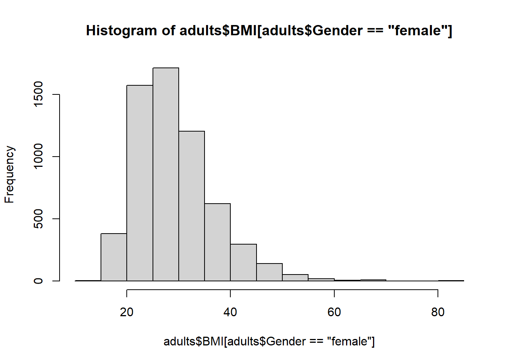
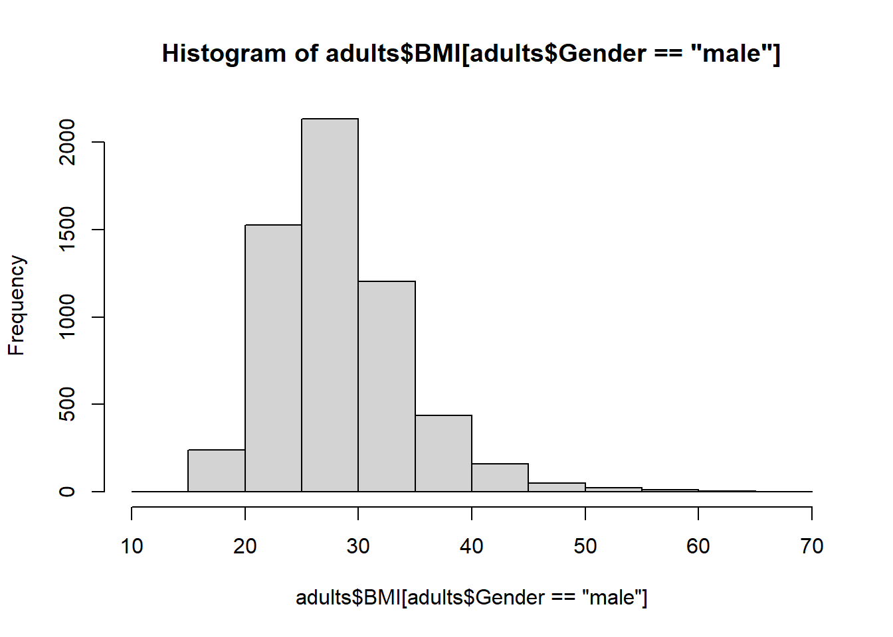
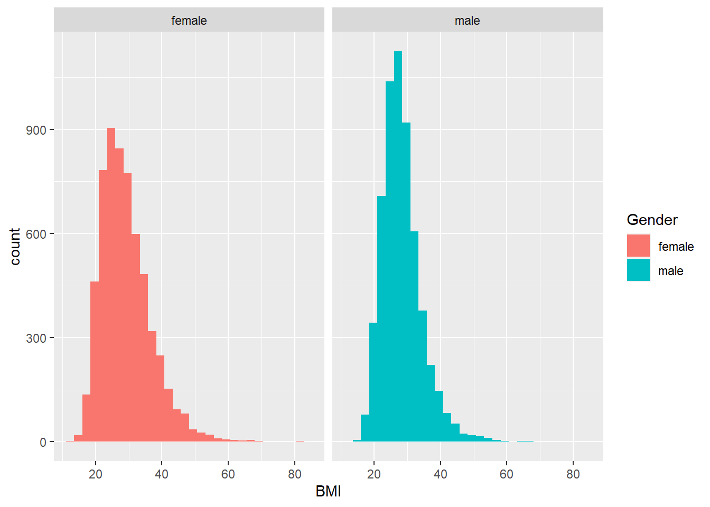

Chapter 14 Significance tests
14.1 Chi-square
Chi-square test for categorical variables determines whether there is a difference in the population proportions between two or more groups
Let’s look at smoking for men vs. women
contingency_table_gender <- table(adults$Gender,
adults$SmokeNow)
contingency_table_gender##
## No Yes
## female 1116 1032
## male 1663 1422Or the ‘dplyr way’:
adults %>%
dplyr::filter(!is.na(SmokeNow)) %>%
dplyr::group_by(Gender, SmokeNow) %>%
dplyr::summarise(n = n()) %>%
dplyr::mutate(freq = n / sum(n))## `summarise()` has grouped output by 'Gender'. You can override using the `.groups` argument.## # A tibble: 4 x 4
## # Groups: Gender [2]
## Gender SmokeNow n freq
## <fct> <fct> <int> <dbl>
## 1 female No 1116 0.520
## 2 female Yes 1032 0.480
## 3 male No 1663 0.539
## 4 male Yes 1422 0.461chisq.test(adults$SmokeNow, adults$Gender)##
## Pearson's Chi-squared test with Yates' continuity correction
##
## data: adults$SmokeNow and adults$Gender
## X-squared = 1.8573, df = 1, p-value = 0.172914.2 T-test
You can specify whether you need it to be one-sided / two-sided & one-sample / independent-sample.
Let’s look at whether BMI differs between men and women:
hist(adults$BMI[adults$Gender=="female"])
hist(adults$BMI[adults$Gender=="male"]) Or let’s do it the ggplot2 way
# Define default colour scale suitable for colour-blind users
scale_colour_discrete <- ggthemes::scale_color_colorblind# Create plot facetted by Gender
ggplot(adults, aes(BMI, fill = Gender)) +
geom_histogram() +
facet_wrap(.~Gender)## Warning: Removed 580 rows containing non-finite values (stat_bin).
Any guesses on whether there is a significant difference? Now it’s time to do the test.
t.test(x = adults$BMI[adults$Gender == "female"],
y = adults$BMI[adults$Gender == "male"],
alternative = "two.sided", # could also be 'less' or 'greater' for one-sided test
paired = FALSE) ##
## Welch Two Sample t-test
##
## data: adults$BMI[adults$Gender == "female"] and adults$BMI[adults$Gender == "male"]
## t = 7.1026, df = 11386, p-value = 1.297e-12
## alternative hypothesis: true difference in means is not equal to 0
## 95 percent confidence interval:
## 0.6484638 1.1428217
## sample estimates:
## mean of x mean of y
## 29.26902 28.37338Yes, on average women seem to have a higher BMI in this survey.